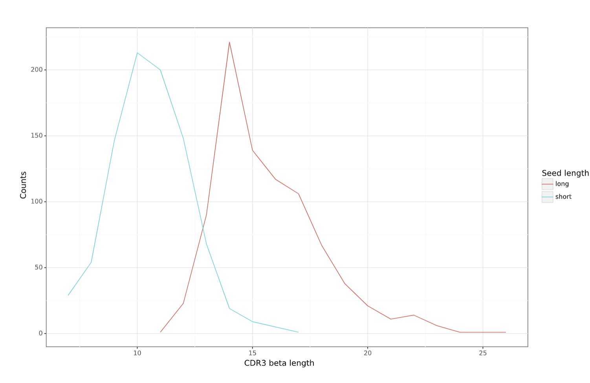

Constructing LIgO motifs inspired by VDJdb¶
LIgO enables the generation of motifs using either (i) a position weight matrix (PWM) or (ii) a combination of a short amino acid sequence (i.e., a seed) and a list of hamming distances, representing the allowed deviatoins from the seed. When starting from a known motif present in a group of TCRs, a PWM can be used. However, when the exact distribution of every amino acid is unknown, defining a seed and hamming distances offers a simpler approach.
When using motif seeds for LIgO simulation, it is important to consider the impact of seed length and Hamming distances on the quality of simulated TCR sequences. Ideally, when simulating a TCR repertoire or a set of TCRs, the predefined LIgO seeds should be identifiable within these TCRs.
In this tutorial, we demonstrate the impact of the seed length on simulated signal-specific TCRs.
Constructing seeds from the VDJdb receptors¶
For demonstration purposes, we define three seeds from three TCR beta sequences in the VDJdb (Shugay et al. 2018), all recognizing the DENV3/4 epitope GTSGSPIINR (Table 1). To transform these TCRs into seeds, they need to be shrinked. Typically, the epitope-binding motif is located in the middle of CDR3 beta sequences, while the beginning and end are responsible for HLA-binding. Therefore, the center of the CDR3 beta sequence can be used as seed. In this tutorial we will consider two ways of constructing seeds: long seeds and short seeds.
To construct long seeds we removed the first and the last 3 amino acids were removed from the CDR3 sequence;
To construct short seeds we randomly selected a consecutive substring of 3 amino acid long out of the long seed sequence in such way, that the resulting seeds are not too similar.
Table 1 shows the long and short seeds that were selected for the three initial TCRs. We will use these two seed sets to perform two LIgO simulations, keeping all other simulation parameters identical except for the seeds.
TCR beta sequence |
TRBV gene |
TRBJ gene |
Epitope |
Long Seed |
Short Seed |
|---|---|---|---|---|---|
CSVELSGINQPQHF |
TRBV29-1 |
TRBJ1-5 |
GTSGSPIINR |
ELSGINQP |
SGI |
CASSPAGGTYEQYF |
TRBV11-2 |
TRBJ2-7 |
GTSGSPIINR |
SPAGGTYE |
PAG |
CASSGGDVREEQYF |
TRBV9 |
TRBJ2-7 |
GTSGSPIINR |
SGGDVREE |
DVR |
Defining motifs based on the seeds¶
After describing the seeds, it is required to define possible deviations that are allowed from these seeds using hamming distance. To select the maximum hamming distance, consider the length of your seed and the aimed diversity of the final TCR repertoire.
Shorter seeds require lower hamming distances. However, if one only wishes to simulated TCRs looking very similar to the seed, one can also lower the hamming distance.
In this tutorial, a maximum hamming distance of two was selected so that the diversity of the simulated epitope-specific TCR receptors does not become too large. Below we show an example of how to define motifs using haming distance and long seeds.
motifs:
motif1:
hamming_distance_probabilities:
0: 0.1 # 10% of TCRs will contain ELSGINQP as the exact match
1: 0.2 # 20% of TCRs will contain ELSGINQP with 1 mismatch
2: 0.7 # 70% of TCRs will contain ELSGINQP with 2 mismatch
seed: ELSGINQP
motif2:
hamming_distance_probabilities:
0: 0.1 # 10% of TCRs will contain SPAGGTYE as the exact match
1: 0.2 # 20% of TCRs will contain SPAGGTYE with 1 mismatch
2: 0.7 # 70% of TCRs will contain SPAGGTYE with 2 mismatch
seed: SPAGGTYE
motif3:
hamming_distance_probabilities:
0: 0.1 # 10% of TCRs will contain SGGDVREE as the exact match
1: 0.2 # 20% of TCRs will contain SGGDVREE with 1 mismatch
2: 0.7 # 70% of TCRs will contain SGGDVREE with 2 mismatch
seed: SGGDVREE
Running LIgO for long and short seeds¶
definitions:
motifs: # define motifs based on long seeds
motif1:
hamming_distance_probabilities:
0: 0.1
1: 0.2
2: 0.7
seed: ELSGINQP # replace with SGI to simulate signal-specific TCRs with short seeds
motif2:
hamming_distance_probabilities:
0: 0.1
1: 0.2
2: 0.7
seed: SPAGGTYE # replace with PAG to simulate signal-specific TCRs with short seeds
motif3:
hamming_distance_probabilities:
0: 0.1
1: 0.2
2: 0.7
seed: SGGDVREE # replace with DVR to simulate signal-specific TCRs with short seeds
signals:
signal1:
motifs:
- motif1
sequence_position_weights:
'104': 0 # we did not want to start the motif at the first position, i.e. IMGT position 104
signal2:
motifs:
- motif2
sequence_position_weights:
'104': 0 # we did not want to start the motif at the first position, i.e. IMGT position 104
signal3:
motifs:
- motif3
sequence_position_weights:
'104': 0 # we did not want to start the motif at the first position, i.e. IMGT position 104
simulations:
sim1:
is_repertoire: false
paired: false
sequence_type: amino_acid
simulation_strategy: RejectionSampling
sim_items:
var1:
generative_model:
default_model_name: humanTRB
type: OLGA
is_noise: false
number_of_examples: 300 # simulate 300 TCRs
signals:
signal1: 1 # all TCRs having signal1
var2:
generative_model:
default_model_name: humanTRB
type: OLGA
is_noise: false
number_of_examples: 300 # simulate 300 TCRs
signals:
signal2: 1 # all TCRs having signal2
var3:
generative_model:
default_model_name: humanTRB
type: OLGA
is_noise: false
number_of_examples: 300 # simulate 300 TCRs
signals:
signal3: 1 # all TCRs having signal3
instructions:
inst1:
export_p_gens: false
max_iterations: 2000
number_of_processes: 8
sequence_batch_size: 10000
simulation: sim1
type: LigoSim
output:
format: HTML
Observation 1: a large allowance for hamming distance may impact the identification of the seed sequences when simulated with shorter seeds¶
Tables 2 and 3 present examples of simulated TCRs for the long and short seed simulations, respectively. As expected, most of the amino acids in the original long seed are retained, with only a few positions changed. The opposite is true for the short seeds. Since we allowed up to two hamming distances for a seed of three amino acids, it is a challenge to identify the original seed within the simulated TCRs.
junction_aa |
seed_match |
hamming_distance |
seed |
|---|---|---|---|
CAAGDRSGINQPQHF |
DRSGINQP |
2 |
ELSGINQP |
CACTELAGGNQPQHF |
ELAGGNQP |
2 |
ELSGINQP |
CAIASGGRVREQFF |
SGGRVREQ |
1 |
SGGDVREE |
CAIQGTSGGAIREETQYF |
SGGAIREE |
2 |
SGGDVREE |
CAIICPGGGTYEQYF |
CPGGGTYE |
2 |
SPAGGTYE |
CAIPSPCGGCYEQYF |
SPCGGCYE |
2 |
SPAGGTYE |
junction_aa |
seed_match |
hamming_distance |
seed |
|---|---|---|---|
CAAELLEQYF |
AAE |
2 |
PAG |
CACCNCQPQHF |
PQH |
2 |
PAG |
CACDTLNEQYF |
DTL |
2 |
DVR |
CACEWRYNEQFF |
EWR |
2 |
DVR |
CACILEKLFF |
ACI |
2 |
SGI |
Observation 2: hamming distance and seed length may affect the similarity between simulation seeds and simulated TCR cluster concensuses¶
We used ClustTCR (Valkiers et al., 2021) to investigate the architecture of the simulated TCRs by clustering their CDR3s with up to one allowed amino acid difference. The TCRs simulated with two different sets of seeds were clustered separately, and for each cluster, a motif summarizing the consensus sequence was calculated. The motifs for the 10 largest clusters are provided in tables 4 and 5 for the long and short seed simulation, respectively.
When simulating the TCRs with long seeds, we observe a clear overlap between the clusTCR motifs and the original seeds. This indicates successful simulation of the original motif within the receptors. However, in the case of simulating epitope-specific TCRs using short seeds, we find that these seeds are not well represented within the clusTCR motifs. The clustering may be influenced by other common similarities outside of the predefined motif, leading to a loss of track of the original motif after simulation.
Seed length and allowed hamming distance both have an impact on the final results. Even with long seeds, unwanted results can occur if the hamming distances are set too high. As a general recommendation, we advise clustering the simulated receptors in case the exact presence of motifs is required for your study.
CDR3 Motif |
Seed |
Cluster size |
|---|---|---|
CASSp.GGtYEQYF |
SPAGGTYE |
59 |
CASSLSG.NQPQHF |
ELSGINQP |
16 |
CASSL.GINQPQHF |
ELSGINQP |
9 |
CASSAGG.YEQYF |
SPAGGTYE |
7 |
CASSGG.VRYEQYF |
SGGDVREE |
6 |
CASP[GP]GG.YEQYF |
SPAGGTYE |
6 |
CASSE.SGSNQPQHF |
ELSGINQP |
5 |
CASSPGtGTYEQYF |
SPAGGTYE |
4 |
CASSvAGGTGELFF |
SPAGGTYE |
4 |
CDR3 Motif |
Seed |
Cluster size |
|---|---|---|
CA..YEQYF |
PAG,DVR,SGI |
15 |
CAs.yEQYF |
PAG,DVR,SGI |
14 |
CA.T[AP]YEQYF |
PAG,DVR |
9 |
CArDEQYF |
DVR |
8 |
CAS..ETQYF |
SGI |
8 |
CAS.tYEQYF |
SGI |
6 |
C[RT]DYEQYF |
DVR |
5 |
CA[KT][SR]ETQYF |
DVR,SGI |
5 |
C[GV]G[QL]YEQYF |
SGI |
5 |
CAR.TDTQYF |
DVR |
5 |
Observation 3: TCRs simulated with a short seed have shorter CDR3s compared to TCRs simulated with long seeds¶
We also compared the distribution of CDRR3 length (in amino acids) between the TCRs generated with short and long motifs (shown in blue and red, respectively). Our observation indicates that TCRs generated with long motifs tend to be longer than those generated with short motifs.
{kind=link}

General tips for defining a motif¶
Start with the full seed you want to find back in your simulated TCRs, e.g., ELSGINQP
If you want to use rejection sampling, estimate the maximal hamming distance to finish your simulation in a reasonable time. You can start with a very restrictive hamming distance (e.g. max 1) and adjust it as needed. You can use the feasibility report to estimate the effectiveness of the simulation with a given set of parameters, see How to check feasibility of the simulation parameters.
For example, in this tutorial we used the following rule of the thumb: - Seed length of 6-8 => maximal hamming distance =2 - Seed length of 9-10 => maximal hamming distance =3 - Seed length >10 => test the simulation with a maximal hamming distance of 3. If not enough TCR are simulated, increase the max hamming distance up to 4.
If you want to use implanting, you do not need to estimate the feasibility because the simulation will be fast with any hamming distance.
Start the simulation with the selected seed and hamming distances. Check for the presence of the predefined motif in the simulated TCRs by clustering or allocating the seed within the TCR sequences.